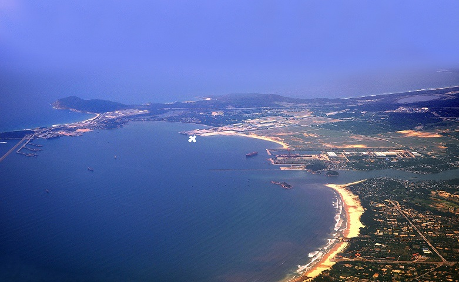

Vịnh Dung Quất
Vịnh Dung Quất hay vũng Quýt nằm ở hai xã Bình Thạnh và Bình Thuận của huyện Bình Sơn, phía Bắc tỉnh Quảng Ngãi, đồng thời giáp với huyện Núi Thành, tỉnh Quảng Nam và cách bờ biển khoảng 18km.
Được biết, Dung Quất chia làm 2 vịnh nhỏ: 1 vịnh có diện tích 132 km2 kéo dài từ núi Thành Lòng đến mũi Co Co, sâu hơn 20m và 1 vịnh nối từ cửa biển Sơn Trà đến mũi Co Co, với diện tích khoảng 7 km2, sâu từ 6 đến 20m.
Trong đó, vịnh nhỏ kín gió do được bao bọc bởi dãy núi Nam Trâm sừng sững, lại siêu thơ mộng hơn nên được chọn làm nơi xây dựng cụm cảng về dầu khí, container, thương mại, dịch vụ…và các khu công nghiệp dầu khí, thực phẩm, luyện cán thép…Chính vì thế, nơi đây lúc nào cũng đông đúc và nhộn nhịp dòng người ghé thăm
Ngoài ra còn có một cảng dầu khí rất là lớn nẳm ở Miền trung Việt Nam tên là cảng Dung Quất.
Tìm hiểu thêm về cảng tạiWikipedia.
Hình cảng Dung Quất